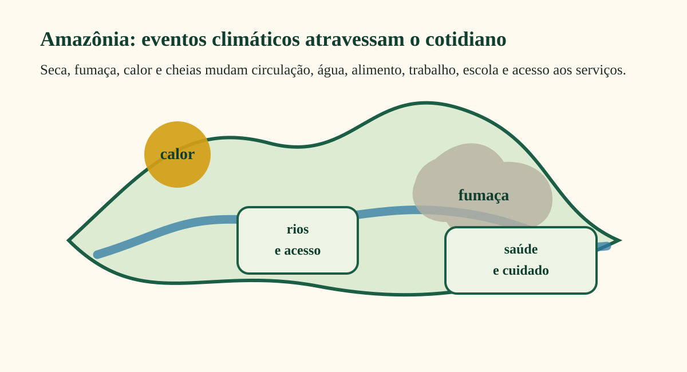
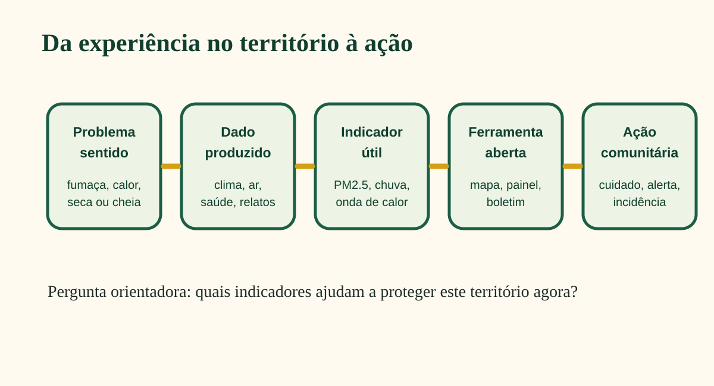
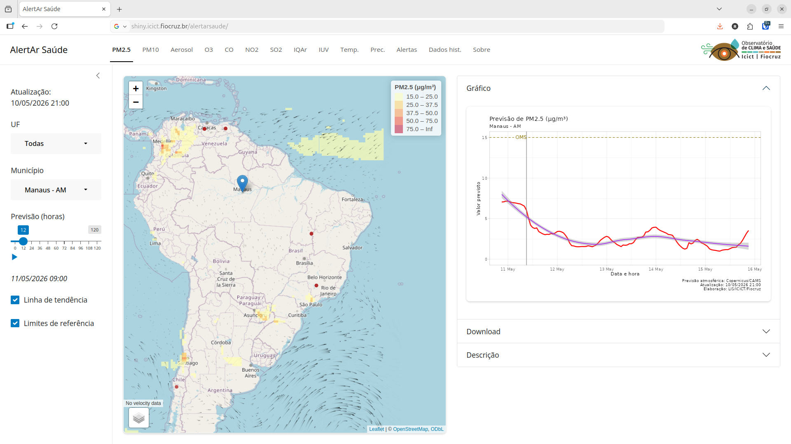

Dados territoriais, monitoramento comunitário e AlertAr Saúde
2026-12-05
Quais sinais da mudança climática aparecem no território antes de aparecerem nos dados oficiais?
Pode ser a fumaça chegando, o rio baixando, a água mudando, o calor ficando insuportável, a escola suspendendo atividades ou a UBS recebendo mais pessoas com sintomas respiratórios.
A proposta é aproximar os dados produzidos pelo Observatório de Clima e Saúde da Fiocruz com os saberes e práticas de monitoramento territorial independente.
As mudanças climáticas não afetam apenas o ambiente: elas atravessam corpos, modos de vida e territórios.
Para agir, precisamos combinar:
Dados públicos
clima, ar, ambiente e saúde
Monitoramento territorial
saberes locais e vigilância popular
Ferramentas abertas
mapas, alertas e evidências

A Amazônia concentra processos que se sobrepõem:
Esses eventos afetam a saúde por caminhos diretos e indiretos: respiração, calor, água, alimentação, deslocamento, acesso aos serviços, saúde mental e organização comunitária.
Corpos adoecem quando territórios são degradados; territórios adoecem quando águas, florestas, caminhos, redes de cuidado e modos de vida são interrompidos.
Corpos sentem a fumaça, o calor, a água contaminada, o medo, a perda e o esforço de viver em condições adversas.
Territórios registram mudanças no rio, na floresta, no ar, nos alimentos, na circulação e nos serviços.
Monitorar é transformar sinais do território em informação para proteger vidas e direitos.
1. Coleta e integração
Bases públicas, sensoriamento remoto, reanálises climáticas, modelos atmosféricos e sistemas de saúde.
2. Territorialização
Transformação de grades climáticas e atmosféricas em indicadores por município, região ou recorte territorial.
3. Indicadores
Calor, chuva, seca, umidade, qualidade do ar, população exposta e agravos à saúde.
4. Sistemas e comunicação
Mapas, gráficos, painéis, relatórios, cursos, notas técnicas e alertas.
Clima
Temperatura, chuva, umidade, ondas de calor, noites quentes, estiagens e eventos extremos.
Qualidade do ar
PM2.5, PM10, ozônio, NO₂ e SO₂, com histórico e previsão para municípios brasileiros.
Saúde e população
Hospitalizações, mortalidade, doenças sensíveis ao clima, denominadores populacionais e indicadores territoriais.
Esses dados são organizados para apoiar mapas, séries temporais, indicadores de risco e estudos sobre desigualdades territoriais em saúde.
1. Dados climáticos e atmosféricos
ERA5-Land, CAMS, satélites, modelos e previsões.
2. Dados de saúde
Sistemas do SUS, hospitalizações, mortalidade, agravos e indicadores populacionais.
3. Indicadores territoriais
Eventos extremos, exposição, vulnerabilidade, acesso a serviços e desigualdades.
4. Ferramentas e uso social
AlertAr Saúde, mapas, boletins, cursos, protocolos e comunicação acessível.

| Tema | Indicadores possíveis | Perguntas para o território |
|---|---|---|
| Fumaça e ar | PM2.5, PM10, previsão de poluentes | Quando a fumaça chega? Quem precisa ser protegido primeiro? |
| Calor | dias quentes, ondas de calor, noites quentes | Quais grupos sofrem mais? Há locais de abrigo e hidratação? |
| Seca | chuva acumulada, dias secos, umidade | Como muda o acesso à água, alimento, transporte e cuidado? |
| Cheias | chuva extrema, áreas alagadas, acesso a serviços | Quem fica isolado? Quais serviços são interrompidos? |
| Saúde | internações, sintomas, doenças infecciosas | O evento climático aparece nos dados de saúde e nos relatos locais? |
Ferramentas e bases
Produtos e formação
Exemplo aplicado: a nota técnica sobre a Terra Indígena Yanomami mostrou como dados territoriais podem apoiar a identificação de áreas críticas e o direcionamento de respostas em situações de emergência sanitária.
Sistema de alerta precoce sobre poluição do ar e efeitos na saúde para municípios brasileiros.
O sistema permite acompanhar:

Antes
O AlertAr indica aumento de PM2.5 nos próximos dias. Lideranças e equipes locais observam fumaça, baixa visibilidade e relatos de irritação nos olhos.
Durante
A comunidade registra sintomas, orienta grupos vulnerabilizados, dialoga com escolas, UBS e defesa civil, e evita atividades externas nos horários mais críticos.
Depois
Os dados do sistema, os relatos comunitários e os registros de saúde são comparados para produzir evidência, memória do evento e demanda por resposta pública.
Durante fumaça, queimada ou seca, o AlertAr pode ajudar a:
Antecipar
identificar dias críticos antes da exposição mais intensa.
Comunicar
traduzir previsão técnica em orientação local.
Priorizar
crianças, idosos, gestantes, pessoas com asma e trabalhadores expostos.
Registrar
comparar alertas, relatos comunitários e dados de saúde.
O monitoramento integrado permite produzir evidências sobre:
Essas evidências podem apoiar planos locais, pedidos de resposta emergencial, comunicação pública e defesa de direitos territoriais. Na crise de saúde Yanomami, esse tipo de abordagem orientou uma nota técnica com cenários de impacto para apoiar intervenções na Terra Indígena Yanomami.
A partir dos dados
A partir dos territórios
O próximo passo é aproximar os dados produzidos pelo Observatório dos registros comunitários da Rede MTI.
Dados não substituem o conhecimento do território.
Eles podem fortalecer esse conhecimento.
Para enfrentar os impactos das mudanças climáticas na Amazônia, precisamos de monitoramento que seja:
territorial · participativo · aberto · compreensível · orientado à ação
A pergunta final não é apenas “que dados temos?”, mas “que dados ajudam a proteger vidas, territórios e direitos agora?”.
{climindi}: https://rfsaldanha.github.io/climindi/{rpcdas}: https://rfsaldanha.github.io/rpcdas/raphael.saldanha@fiocruz.br
Observatório de Clima e Saúde | Fiocruz